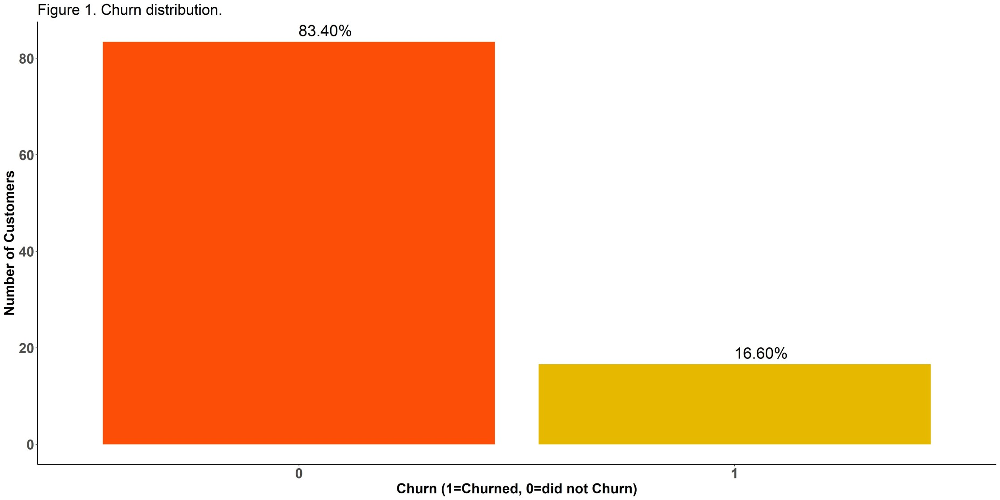
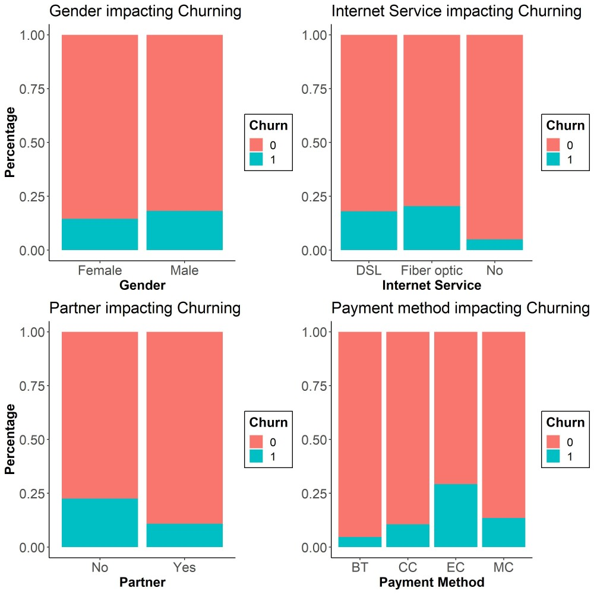
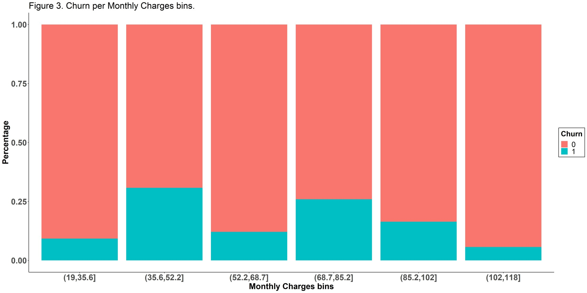
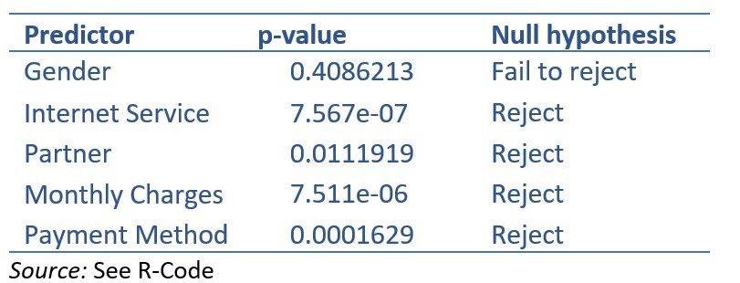

Introduction
Churn is the term for the natural and inevitable way that a business loses customers. In this article, I show how to apply data modelling with R to find out what causes customers to leave and how to build a predictive model.
The dataset covers a telecom provider's customers, including demographic information (age, gender, marital status) and transaction information (monthly charges, internet service, payment method). The goal is to identify which factors are significantly associated with the probability of a customer churning.
Exploratory Data Analysis
The telecoms churn dataset contains 512 observations across seven predictors, with a binary response variable called churn. Gender, Partner, Payment Method, and Internet Service are categorical variables. Monthly charges is a continuous variable.
Only 16.60% of total customers in the dataset churned in the last two years — an important baseline to keep in mind when interpreting the model.

Figure 2 shows the breakdown of the categorical variables on customer churn.


Binning the monthly charges reveals a further pattern: customers paying between £35.6–£52.2 and between £68.7–£85.2 per month show notably higher churn percentages than those in adjacent bands.
Logistic Model
The logistic model was fitted with churn as the response variable, using Gender, Internet Service, Partner, and Payment Method as categorical predictors, and monthly charges as a continuous predictor. Customer ID was excluded as it carries no behavioural information.
+ β₄·(partnerᵢ) + β₅·(credit_cardᵢ) + β₆·(electronic_checkᵢ)
+ β₇·(mailed_checkᵢ) + ϵᵢ
Where ηᵢ is the linear predictor of churning, and each dummy variable equals 1 when the observation matches the stated condition and 0 otherwise. The inverse logit function constrains the output to lie between 0 and 1, giving Prob(yᵢ = 1) — the probability of a customer churning.
A male customer, living with a partner, monthly charges of £70, fibre optic internet, credit card payment — estimated churn probability: 0.226.
Key findings from the initial model:
- Gender — no strong evidence of association (p = 0.410)
- Fibre optic internet — positively associated with churning vs DSL (p = 0.0008)
- No internet service — negatively associated with churning vs DSL (p < 0.0001)
- Living with a partner — negatively associated with churning (p = 0.012)
- Monthly charges — each unit increase slightly reduces churn probability (p < 0.0001)
- Electronic check payment — positively associated with churning (p = 0.0006)
- Credit card / mailed check — no strong evidence of association
Model Building via LRT
Starting with all predictors, the drop1 function was used to iteratively remove the least significant predictor until all remaining predictors were significant. The Log-likelihood Ratio Test (LRT) was used at each stage to test whether each predictor could be dropped without significant loss of fit.

Gender was identified as non-significant and removed. All remaining predictors — Internet Service, Partner, Payment Method, and Monthly Charges — were retained in the final model.
Final Model — Key Odds Ratios
Bank transfer vs credit card: No significant difference in churn impact (p = 0.221). We fail to reject H₀.
Fibre optic vs DSL: Significantly different (p = 0.0009). A customer with fibre optic is 0.18× less likely to churn than a DSL customer (95% CI: 0.06 to 0.49).
Living with a partner vs without: Significantly different (p = 0.009). A customer living with a partner is 0.50× less likely to churn (95% CI: 0.29 to 0.84).
Conclusion
The analysis shows that 16.60% of customers churned. Gender had no meaningful effect. Customers with no internet service were the least likely to churn — the strongest signal in the dataset (p < 0.0001). Customers with a partner churned at roughly half the rate of those without.
Monthly charges show a narrow but significant negative effect (95% CI: −0.072 to −0.027), suggesting that as charges increase, churn probability marginally decreases — though the practical interpretation requires care.
The most actionable finding from the binned charges analysis: customers paying between £85.2 and £118 per month are significantly more likely to churn than those paying £19–£35.6. Discounting monthly charges below £85.2 for high-value customers could meaningfully reduce churn risk.
She Knows Too Much is a newsletter about data, leadership, and the messy middle of a career that refuses to sit still. Written from Dublin, usually after too much coffee.